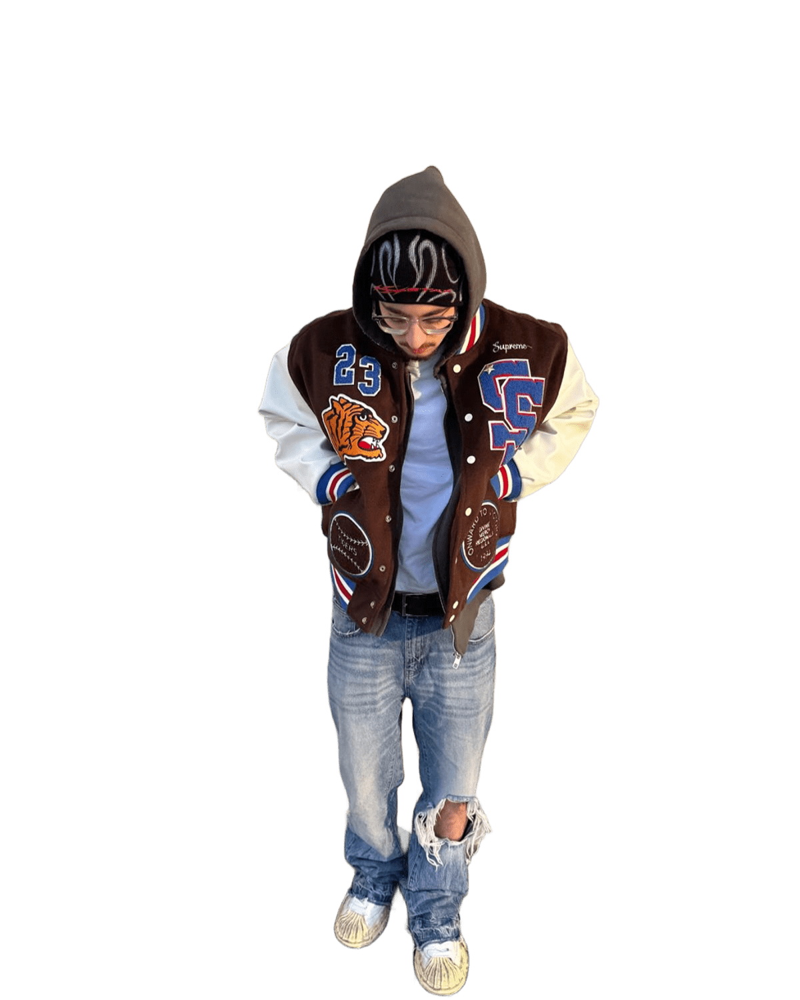

To whom it may concern,
AWGERIC creează conținut pe YouTube și face livestreamuri în scena rap underground. A lucrat cu FTL EYES și RageCTRL, artiști emergenți și organizatori de evenimente. Este afiliat cu RageCTRL Cypher, iar AWGERIC rămâne un proiect independent.
YouTube · Livestream · Muzică
Creator independent · România
AWGERIC

YouTube · Livestream23.11.2026
Activitate
Proiecte și
evenimente
RageCTRL Fest
A contribuit la organizare, vânzarea biletelor și promovarea festivalului, care a adunat peste 500 de persoane.
RageCTRL Cypher
A prezentat și a ajutat la organizarea cypherului. AWGERIC este afiliat proiectului, dar rămâne un creator independent.
„asta asta” · Censu
Videoclip găzduit pe canalul AWGERIC, cu 37K de vizualizări pe YouTube și 70K de streamuri pe Spotify.
„Justin Bieber” · Trap House Moldova
Videoclipul a fost realizat în timpul unei transmisiuni AWGERIC și a ajuns la 32K de vizualizări pe YouTube.
Colaborări
Artiști
Colaborări recurente. Ascultători lunari comunicați pentru fiecare artist.
ArtistAscultători lunari
Candyboii112K
supern0va48.3K
Censu12.8K
blt10.8K
Trap House Moldova12K
geeko!12K
Rocket!5.9K
Colaborări și organizatori
A lucrat cu
FTL EYESRageCTRL@wecrossedover
Colaborări cu branduri
Categorii
Categorii și formate de colaborare.
MuzicăEchipamente de studioEchipamente audioPerifericeBăuturi energizante și răcoritoareFestivaluri și evenimenteJocuri videoStreetwearTehnologie și gadgeturiPlatforme de streamingAplicații digitale
Formate de colaborare
- Integrări în videoclipuri
- Integrări în transmisiuni în direct
- Promovarea lansării unui produs
- Activități în comunitatea Discord
- Prezentarea unui produs pe pagina brandului
- Apariții la festivaluri și evenimente
AWGERIC · 2026
Contact MEDIA KIT